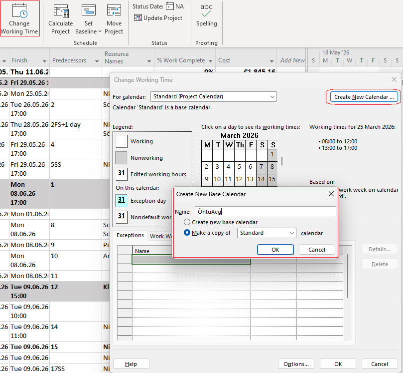
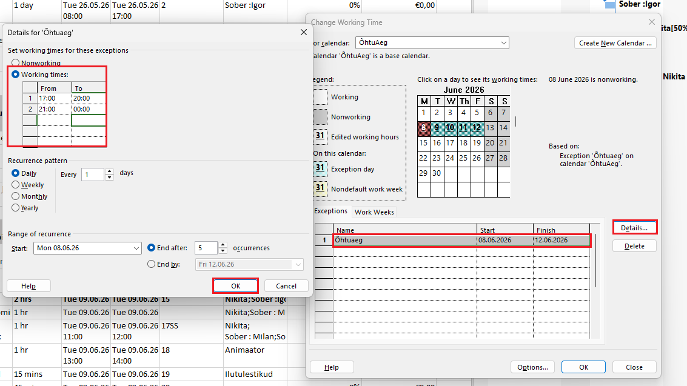
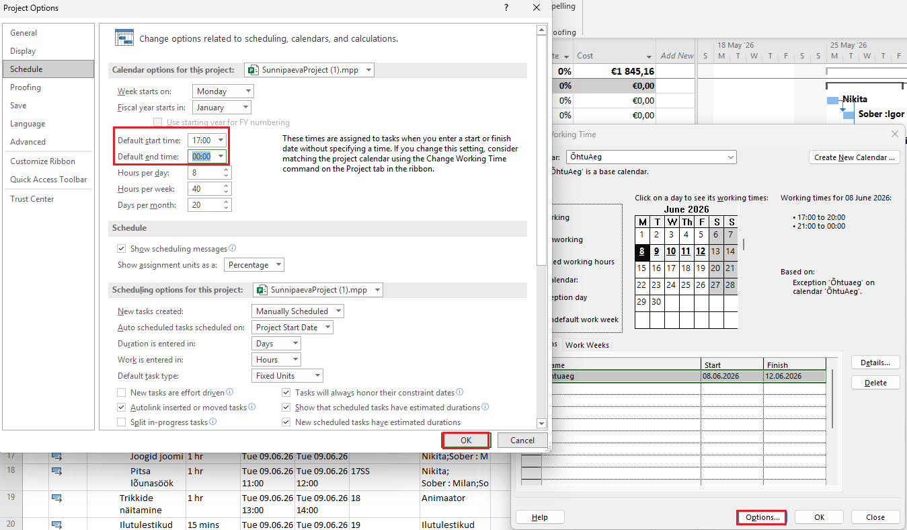

📅 Uue kalendri loomine
Mine Project → Change Working Time → Create New Calendar. Sisesta nimi ja vali kas kopeerida olemasolev kalender või luua uus.

⏰ Tööaegade muutmine
Ava Project → Change Working Time. Seal saad määrata tööpäevi, tööaegu ja lisada puhkepäevi.
- Tööpäevad (E–R)
- Tööaeg (nt 9:00–17:00)
- Puhkused ja pühad

⚙️ Kalendri kasutamine projektis
Mine Project → Project Information ja vali loodud kalender.

📊 Mõju ajakavale
Kalender määrab, millal töö toimub. Kui lisad puhkuse või muudad tööaega, nihkuvad kõik ülesanded vastavalt.
Näiteks: kui lisad nädal puhkust, pikeneb projekt automaatselt.